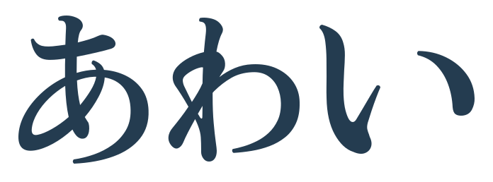
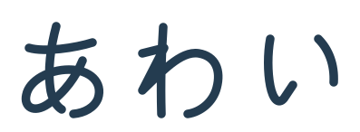

あわい / ロゴ修正版
読める「あわい」を、
ひとつのロゴに。
文字を崩した抽象マークをやめ、「あわい」と読める形から作り直しました。文字の線・間隔・全体のまとまりが違う2案です。本番への採用はまだしていません。
A 明朝の文字ロゴ
以前選ばれた明朝の雰囲気を残し、3文字の大きさと間隔を調整した案です。

Web制作・デザイン

制作例 料金 相談する
B 均一な線の文字ロゴ
3文字を同じ太さの線で描き、角や端の丸みをそろえた案です。

Web制作・デザイン

制作例 料金 相談する